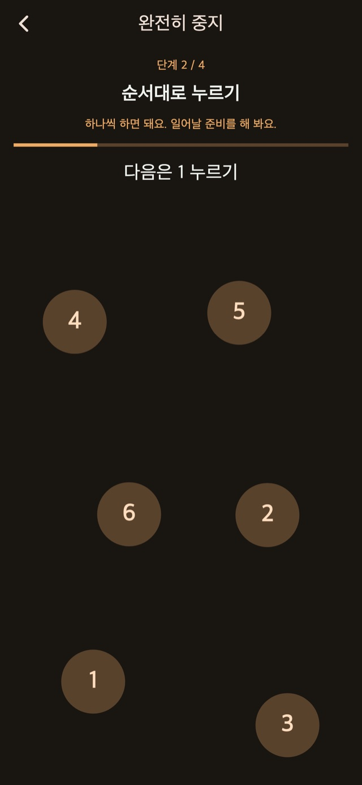
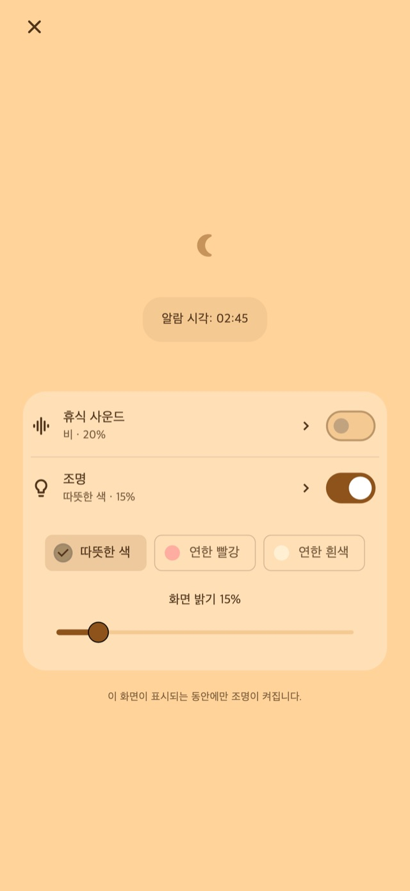

휴식 사운드
비, 파도, 백색소음을 들으며 쉬세요. 소리는 직접 켰을 때만 재생되며 첫 알람에 맞춰 서서히 줄어들어 멈춥니다.
01진동 패턴
길이와 리듬이 달라져 평소 알림과 다르게 느껴지는 진동. ‘평소와 다르다’는 느낌이 잠에서 깨는 계기가 되도록 했습니다.
짧은 진동, 긴 진동, 연속 진동. 무작위, 알림 스타일 중심, 긴 진동 중심, 짧은 진동 중심의 기본 4가지 모드에서 선택하세요. 길이와 간격의 변화가 리듬을 바꿉니다. 설정 전에 진동을 직접 시험할 수 있습니다.
진동 패턴
02여러 번 알림
알람을 하나씩 만들 필요가 없습니다. 현재 알림만 멈추고 다음 알림을 남기거나, 세트를 종료해 남은 예약을 모두 취소할 수 있습니다.
횟수와 간격 저장은 프리미엄 기능입니다.
여러 번 알림
일어나면 종료
03정지 과제
계산, 숫자를 순서대로 누르기, 길게 누르기, 연속 터치 등의 과제로 정지와 스누즈를 진행합니다. 표준 해제 과제는 기본 제공됩니다. 과제를 수정하고 조합하는 기능은 프리미엄에서 사용할 수 있습니다.

야간 화면
알람을 설정한 후 야간 화면으로 기다리며 밝기와 시계 표시를 조정하세요. 잠시 조작하지 않으면 표시를 숨기고, 화면을 누르면 시계와 조작 버튼을 다시 표시하는 방식도 선택할 수 있습니다.
30분 뒤 같은 시간 간격이나 일어날 시각을 선택하세요.
야간 화면을 열어 두고 필요할 때 소리나 빛을 켜세요.
일어나면 해제 과제를 마치고 남은 세트를 종료하세요.
편안한 소리와 조절 가능한 빛
낮잠이나 아이를 재울 때, 필요하면 야간 화면에서 켤 수 있습니다.
비, 파도, 백색소음을 들으며 쉬세요. 소리는 직접 켰을 때만 재생되며 첫 알람에 맞춰 서서히 줄어들어 멈춥니다.
따뜻한 색, 연한 빨강, 부드러운 흰색 빛에서 선택하고 밝기를 조절할 수 있습니다.
기본 기능은 무료

무료 / 프리미엄
기본 4가지 진동, 표준 정지·스누즈, 야간 화면, 편안한 소리와 빛을 사용할 수 있습니다. 일부 화면에는 광고가 표시됩니다.
| 기능 | 무료 | 프리미엄 |
|---|---|---|
| 진동 패턴 | ✓ | ✓ |
| 여러 번 알림 | 표준 설정 | 직접 설정 |
| 정지 과제 | 표준 설정 | 직접 설정 |
| 야간 화면 / 휴식 사운드 / 조명 | ✓ | ✓ |
| 나만의 진동 패턴 생성 및 편집. | — | ✓ |
| 모든 광고 제거. | — | ✓ |
월간 요금제와 일회성 구매 중 선택할 수 있습니다. 월간 요금제는 자동 갱신되며 스토어 계정 설정에서 관리·해지할 수 있습니다. 가격과 조건은 구매 화면에서 확인하세요.
자주 묻는 질문
앱 고유의 진동 패턴을 사용하려면 알람 설정 후 야간 화면을 열어 두세요. 측면 버튼으로 화면을 잠그거나 다른 앱으로 전환하면 iOS가 진동을 제어하며 선택한 패턴과 세기는 적용되지 않습니다. 권한과 기기 진동 설정을 확인하고 사용 전에 작동 테스트를 해 주세요.
비, 파도, 백색소음을 들으며 쉬세요. 소리는 직접 켰을 때만 재생되며 첫 알람에 맞춰 서서히 줄어들어 멈춥니다. 따뜻한 색, 연한 빨강, 부드러운 흰색 빛에서 선택하고 밝기를 조절할 수 있습니다.
기본 4가지 진동, 표준 정지·스누즈, 야간 화면, 편안한 소리와 빛을 사용할 수 있습니다. 일부 화면에는 광고가 표시됩니다. 모든 광고 제거. 알림 횟수와 간격 조정. 정지·스누즈 해제 과제 편집. 나만의 진동 패턴 생성 및 편집. 월간 요금제와 일회성 구매 중 선택할 수 있습니다. 월간 요금제는 자동 갱신되며 스토어 계정 설정에서 관리·해지할 수 있습니다. 가격과 조건은 구매 화면에서 확인하세요.
다운로드
낮잠과 아이 재우기를 위한 진동 알람
기본 기능은 무료
iPhone: iOS 26.1+ / Android: 8.0+